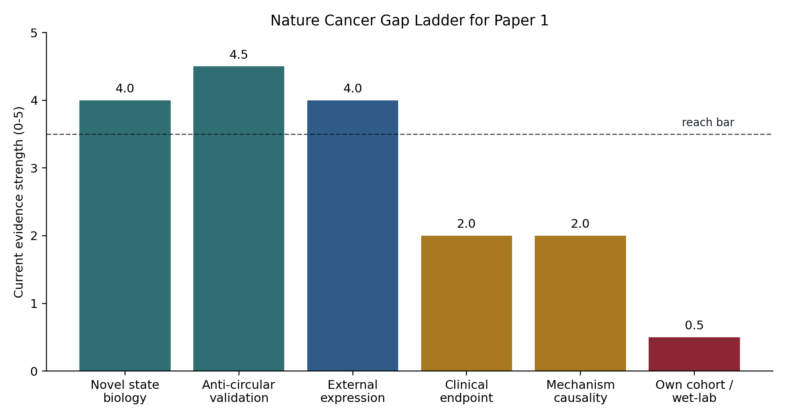
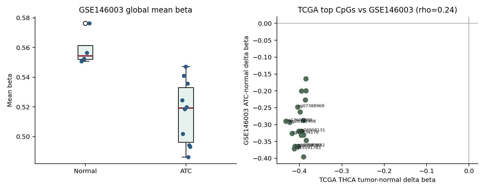
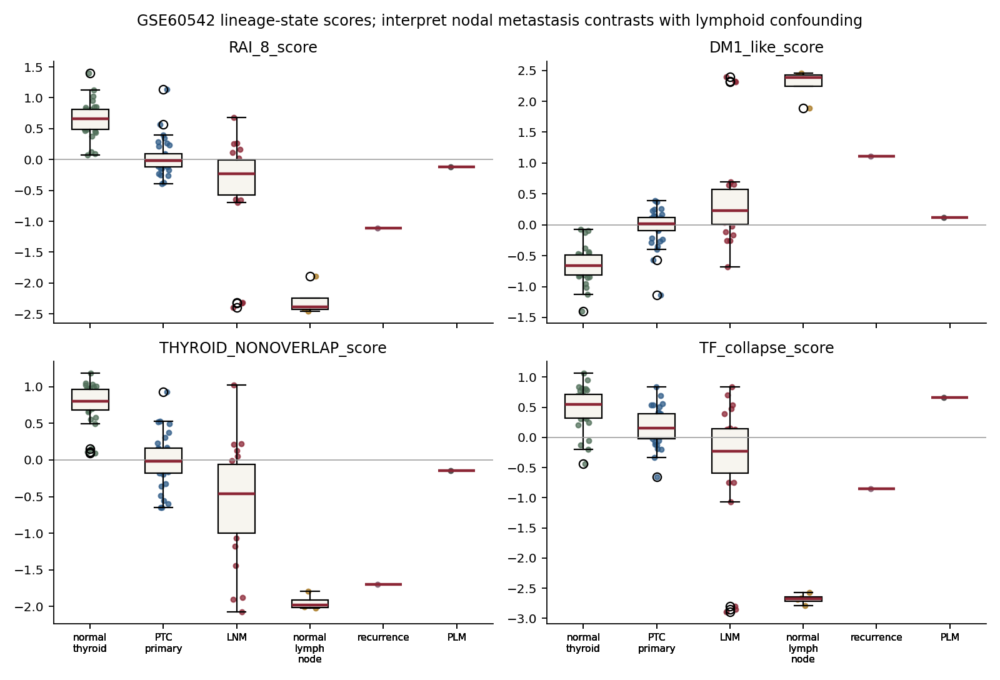
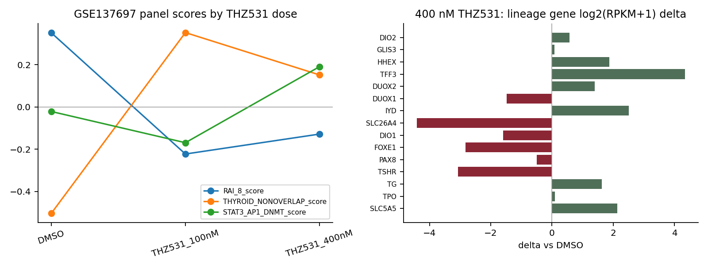
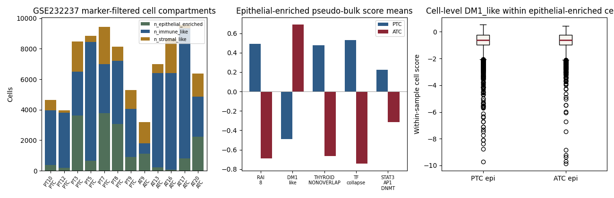

1. 최종 Thesis
Recommended title spine: A thyroid-lineage differentiation axis stratifies thyroid cancer beyond canonical driver mutations.
이 문장은 “치료제 발견”이나 “새 panel 발명”보다 안전하고, 현재 데이터가 가장 잘 방어하는 논문 정체성이다.
Clinical gap
Driver mutation alone is incompleteBRAF/RAS/TERT는 중요하지만 종양의 현재 lineage-function state를 모두 설명하지 못한다.→
Molecular state
RAI-lineage genes collapseSLC5A5/TPO/TG/TSHR/PAX8/NKX2-1/FOXE1/DIO1 축이 dedifferentiation 방향을 읽는다.→
Contribution
External, zero-overlap, mechanistic support겹치지 않는 gene set과 외부 thyroid expression cohort가 같은 방향을 보여준다.TCGA anti-artifact anchor
r=-0.885
DM1_like vs THYROID_NONOVERLAP
Spatial support
26/28
slides with significant Moran structure
Outcome support
HR 1.33
PFI multivariate, BRAF/RAS/age/stage adjusted
Main correction
TROP2↓
exploratory only after external heterogeneity
2. Evidence Stack
Nature Cancer급 페이지에서는 “강한 것부터 약한 것까지”를 숨기지 않고 등급화해야 한다. 아래는 manuscript main text와 supplement의 배치 기준이다.
| Layer | Grade | Evidence | Use in paper | Boundary |
|---|---|---|---|---|
| Lineage axis | A main | RAI_8, TIERA67, pan-genome, zero-overlap module converge. | Title, Abstract, Fig. 1-2 | Call it a compact readout, not a newly discovered causal module. |
| External expression validation | A main/supp | GSE76039 + GPL570 cohorts support direction-consistent lineage silencing. | Fig. 2 or Extended Data 1 | Expression validation only; not clinical-grade validation. |
| Driver orthogonality | A main | Driver-only information does not reconstruct the expression-state axis. | Fig. 1 | Do not imply drivers are irrelevant. |
| Mechanism arm | B support | FOXE1/NKX2-1 collapse, STAT3/AP1/DNMT direction, GSEA consistency. | Fig. 3 | Use “consistent with” and “supports,” not “proves.” |
| Clinical outcome | B support | PFI/DFI associations in TCGA after covariate adjustment. | Fig. 4 or Extended Data | No external survival-endpoint replication. |
| Spatial transcriptomics | B support | DM1 score spatial clustering and negative bivariate Moran with non-overlap module. | Extended Data / supplement | Not H&E inference. |
| TROP2/TACSTD2 | D demote | TCGA signal exists, but GPL570 bulk replication is heterogeneous/negative and spot-level colocalization is negative. | Limitations or future direction | No title, no main claim, no therapeutic population claim. |
3. 분석 사고 흐름
이 페이지의 핵심은 결과 나열이 아니라, 왜 이 framing이 최종적으로 살아남았는지 보여주는 것이다. 분석은 아래 순서로 설계하면 논문이 “방어 가능한 발견”처럼 읽힌다.
기존 driver 설명을 먼저 공격한다.
BRAF/RAS/TERT만으로 DM1/DM2를 설명할 수 있는지 본다. 여기서 끝나면 새 논문이 아니다.
BRAF/RAS/TERT만으로 DM1/DM2를 설명할 수 있는지 본다. 여기서 끝나면 새 논문이 아니다.
8-gene artifact 가능성을 제거한다.
동일한 8개 유전자로만 계속 검증하면 circular하다. Zero-overlap module과 pan-genome/TIERA67가 필요하다.
동일한 8개 유전자로만 계속 검증하면 circular하다. Zero-overlap module과 pan-genome/TIERA67가 필요하다.
외부 expression cohort에서 방향성을 확인한다.
절대 점수 비교보다 dataset 내부 z-score와 histology/advanced disease direction을 본다.
절대 점수 비교보다 dataset 내부 z-score와 histology/advanced disease direction을 본다.
기전은 causal proof가 아니라 coherence test로 둔다.
Lineage TF collapse, DNMT, STAT3/AP1, Hallmark pathway가 같은 방향인지 확인한다.
Lineage TF collapse, DNMT, STAT3/AP1, Hallmark pathway가 같은 방향인지 확인한다.
negative result를 논문 방어로 전환한다.
TROP2와 H&E/WSI는 내려놓는다. 이 정직성이 main thesis의 신뢰도를 올린다.
TROP2와 H&E/WSI는 내려놓는다. 이 정직성이 main thesis의 신뢰도를 올린다.
4. Figure Architecture
Nature Cancer급으로 보이려면 그림 순서는 “예쁜 그림”이 아니라 “반론 제거 순서”여야 한다.


5. Nature Cancer식 Results Spine
Result 1
A driver-orthogonal expression state resolves thyroid cancer heterogeneity.Driver neutrality와 pan-genome robustness를 한 결과 섹션으로 묶는다.
Result 2
A compact RAI-lineage readout captures thyroid identity loss.8-gene을 discovery가 아니라 interpretable measurement tool로 소개한다.
Result 3
Zero-overlap and external cohorts validate the axis.TCGA zero-overlap, spatial non-overlap, GSE76039, GPL570 pack을 anti-artifact ladder로 제시한다.
Result 4
Lineage collapse aligns with STAT3/AP1/DNMT programs.기전은 causal language 없이 coherence and hypothesis-generation으로 둔다.
Result 5
The axis carries clinical signal but needs prospective validation.TCGA PFI/DFI association은 넣되, external survival-endpoint replication 부재를 선제적으로 적는다.
Result 6
Negative controls define the boundary of translation.TROP2, dark-matter-only PFI, H&E/WSI failure를 discussion boundary로 쓴다.
6. Claim Boundary
| Claim | Status | Allowed wording | Forbidden wording |
|---|---|---|---|
| Driver-orthogonal lineage axis | Main | “stratifies thyroid cancer beyond canonical drivers” | “drivers do not matter” |
| 8-gene readout | Main tool | “compact RAI-lineage readout” | “new causal 8-gene discovery panel” |
| External cohorts | Validation | “external expression validation” | “clinical-grade validation” or “survival-endpoint validation” |
| Mechanism | Support | “consistent with TF collapse and STAT3/AP1/DNMT activation” | “causal mechanism is proven” |
| Outcome | Support | “associated with recurrence-related endpoints in TCGA” | “clinically deployable prognostic test” |
| TROP2 | Demote | “exploratory translational lead requiring validation” | “TROP2 vulnerability defines DM1-high disease” |
| H&E/WSI | Drop | “not pursued after negative closure battery” | “image-inferable DM1 state” |
7. Reviewer Attack Map
Attack 1
This is just BRAF/RAS biology.
This is just BRAF/RAS biology.
Use driver neutrality, driver-only clustering failure, and covariate-adjusted models.
Response stance: drivers remain important, but expression state adds orthogonal information.
Attack 2
The 8-gene panel is circular.
The 8-gene panel is circular.
Lead with zero-overlap thyroid module, TIERA67, pan-genome robustness, and drop-one-out stability.
Response stance: 8-gene is the readout, not the discovery engine.
Attack 3
External validation is weak.
External validation is weak.
Separate GSE76039 advanced-disease anchor from GPL570 direction-consistency. Do not claim survival or treatment validation.
Response stance: replicated expression direction, not clinical deployment.
Attack 4
Mechanism is speculative.
Mechanism is speculative.
Frame TF/DNMT/STAT3 as convergent regulatory evidence and hypothesis-generating biology.
Response stance: mechanism is coherent, causality remains future work.
Attack 5
Therapeutic TROP2 claim is overreaching.
Therapeutic TROP2 claim is overreaching.
Preempt by demoting TROP2 and showing the negative spot-level result.
Response stance: TROP2 is not the paper; it is a future validation lead.
8. Writing Plan
Day 1-2
Title, abstract, first paragraphLineage-state thesis로 완전히 재작성. TROP2 단어는 abstract main claim에서 제거한다.
Day 3-5
Results spine rebuildDriver orthogonality → compact readout → external validation → mechanism → outcome → boundary 순서로 재배치한다.
Day 6-8
Figure legends각 legend의 첫 문장을 “무엇을 반박하는 그림인가”로 쓴다. 모든 overclaim 표현을 제거한다.
Day 9-10
Discussion and limitationsTROP2, external clinical-grade validation 부재, causal proof 부재, H&E negative를 정직하게 넣는다.
Writing rule: Paper 1은 강하게 쓰되, 강한 데이터가 없는 방향으로 세게 쓰면 바로 무너진다. “external expression-validated lineage axis”는 강하고, “TROP2 중심 치료 claim”은 현재 약하다.
9. Go / No-Go
Go
Nature Cancer-style reach packageLineage axis 중심, external expression validation, strict claim boundary, strong figure logic이면 reach submission package로 다듬을 수 있다.
Conditional
Mechanistic depthDNMT/STAT3/AP1 arm은 coherent하지만 causality가 아니다. 문장 강도를 낮추면 main story support로 충분하다.
No-go
TROP2 or image-first storyTROP2 headline, H&E prediction, dark-matter-only outcome story는 현재 Nature Cancer급 main thesis가 아니다.
10. Venue Probability
Honest estimate: 현재 상태 그대로 Nature Cancer accept 가능성은 낮다. 이 페이지의 목적은 Nature Cancer 게재를 주장하는 것이 아니라, 원고를 그 수준의 논리 구조로 끌어올리기 위한 editorial pressure test다.
| Scenario | Nature Cancer 가능성 | Interpretation |
|---|---|---|
| 지금 웹/분석 상태 그대로 | 5-10% | Story는 흥미롭지만 mechanism/clinical translation punch가 부족하다. |
| Lineage-axis 중심 재작성 + figure/story 완성 | 10-20% | 도전 제출은 가능하다. 단, main target으로 보기에는 위험하다. |
| 외부 임상 outcome validation 추가 | 15-25% | Expression validation을 넘어 clinical relevance 방어력이 올라간다. |
| Wet-lab / IHC / functional validation까지 추가 | 25-40% | Mechanism 또는 translational punch가 생기면 real reach로 바뀐다. |
왜 낮게 보는가
Strong points
도전권을 만드는 근거Driver mutation beyond라는 질문이 좋고, thyroid-lineage differentiation state로 잡으면 novelty가 있다. Zero-overlap validation과 external expression validation도 main thesis를 방어한다.
Weak points
Accept를 막는 병목Mechanism은 causal proof가 아니라 consistency 수준이다. External validation은 expression-only이고, survival/clinical-endpoint replication이 아니다. TROP2가 내려가면서 translational hook도 약해졌다.
Pragmatic target strategy: 원고는 Nature Cancer급 톤과 구조로 만든다. 첫 투고를 Nature Cancer에 한 번 던질지는 마지막에 결정한다. 하지만 성공 확률 기준 주 타깃은 Cell Reports Medicine, JCI Insight, Nature Communications reach, Genome Medicine 성격이 더 현실적이다.
One-line verdict: Nature Cancer는 불가능은 아니지만 현재는 10-20% reach다. Wet-lab 또는 외부 임상 validation 없이 accept까지 가기는 어렵다.
11. Thyroid-Lineage Differentiation State Analysis
Core analytical move: Paper 1은 “8개 gene panel 성능 논문”이 아니라, 갑상선암 세포가 정상 갑상선 계통 기능을 얼마나 잃었는지 읽는 lineage-state analysis로 재정의해야 한다. 이 framing이 가장 Nature Cancer식이다.
11.1 Biological definition
Thyroid-lineage differentiation state는 종양이 갑상선 세포다운 기능을 유지하는지, 아니면 그 정체성을 잃고 dedifferentiated/stress-like/EMT-like 상태로 이동했는지를 나타내는 RNA expression state다. 정상 갑상선 세포는 요오드 uptake와 thyroid hormone biosynthesis에 필요한 genes를 켜고 있어야 한다. 이 기능이 내려가면 RAI response와 lineage identity가 동시에 약해진 것으로 해석할 수 있다.
Lineage-maintained
Thyroid-like stateSLC5A5, TPO, TG, TSHR, PAX8, NKX2-1, FOXE1, DIO1가 상대적으로 높다. RAI-lineage function이 살아 있는 방향이다.
Transition
Partial lineage lossRAI-lineage genes가 내려가고, TF collapse와 inflammatory/stress pathway가 함께 움직이기 시작한다.
Lineage-collapsed
DM1-like stateThyroid identity genes가 낮고 STAT3/AP1/DNMT/EMT/inflammation arm이 올라간다. 이 논문의 main aggressive-state hypothesis다.
11.2 Score logic
| Component | Direction in lineage-collapsed state | Role | Manuscript wording |
|---|---|---|---|
| RAI_8 core | Down | Compact measurement of thyroid/RAI-lineage function | “compact RAI-lineage readout” |
| THYROID_NONOVERLAP | Down | Anti-circular validation module sharing zero genes with RAI_8 | “zero-overlap lineage validation” |
| DM1_like | Up when lineage genes are down | Reverse-oriented score: high means lineage loss/dedifferentiation direction | “lineage-collapsed expression state” |
| TDS-like biology | Down | Known thyroid differentiation direction | “consistent with thyroid differentiation loss” |
| TF-collapse module | Down for FOXE1/NKX2-1/PAX8/HHEX | Mechanism support for loss of thyroid identity regulation | “regulatory coherence” |
Important wording: DM1_like가 높다는 말은 “특정 8개 유전자가 높다”가 아니다. 오히려 갑상선 lineage genes가 낮아진 상태를 reverse orientation으로 읽는 것이다. 그래서 독자가 헷갈리지 않게 Methods와 Figure legend에서 방향성을 계속 고정해야 한다.
11.3 Evidence chain for the state
Within TCGA: DM1_like와 zero-overlap thyroid-lineage module이 강하게 반대 방향으로 움직인다. 이게 panel artifact 방어의 중심이다.
Across gene universes: 8-gene, TIERA67, pan-genome high-variance genes가 같은 구조를 회수한다. 즉 axis는 8개 gene만의 착시가 아니다.
Across external expression cohorts: GSE76039와 GPL570 thyroid cohorts에서 advanced disease 또는 lineage-silenced direction이 반복된다.
Across spatial transcriptomics: DM1 score가 spot-level에서 spatially clustered하고, non-overlap module과 spatially anti-correlated한다.
Across regulatory programs: FOXE1/NKX2-1 lineage TF collapse와 STAT3/AP1/DNMT activation, IL6/JAK/STAT3, EMT, IFN-gamma, OXPHOS down이 같은 biological direction을 만든다.
11.4 State model to draw in the manuscript
State A
Lineage-maintained thyroid cancerRAI-lineage genes high, thyroid TF program maintained, lower DM1_like.→
State B
Lineage-transition statePartial RAI gene silencing, beginning TF collapse, inflammatory/stress programs rising.→
State C
Lineage-collapsed DM1-like stateRAI-lineage program low, STAT3/AP1/DNMT/EMT high, recurrence-associated signal in TCGA.Figure suggestion
One schematic panel before data figures왼쪽에는 normal thyroid function genes, 가운데에는 partial loss, 오른쪽에는 DM1-like lineage collapse를 둔다. 이 schematic이 있으면 8-gene과 DM1_like 방향 혼란이 크게 줄어든다.
Caption rule
State, not panel모든 caption은 “8-gene score predicts X”보다 “lineage-collapsed state associates with X”로 써야 한다. Panel은 state를 읽는 계기판이다.
11.5 What this adds beyond existing thyroid cancer papers
| Existing frame | Limitation | Paper 1 lineage-state answer |
|---|---|---|
| BRAF/RAS molecular subtype | Explains driver class but not the full expression-state continuum. | Shows a driver-orthogonal thyroid-lineage collapse axis. |
| RAI response gene panel | Often treated as a predictive panel without broader state biology. | Reframes RAI genes as a compact readout of thyroid identity loss. |
| TDS / differentiation score | Known concept, but may remain descriptive. | Links lineage score to zero-overlap validation, external cohorts, spatial structure, TF/DNMT/STAT3 programs, and TCGA outcomes. |
| Target-marker discovery | Can overreach when external replication is weak. | Demotes unstable target claims and keeps the robust lineage-state discovery as the main contribution. |
11.6 Manuscript-ready paragraph
We modelled thyroid cancer as a continuum of thyroid-lineage differentiation rather than as a binary driver-genotype classification. The resulting lineage-collapsed state was defined by coordinated loss of iodine-handling and thyroid identity genes, validated against a zero-overlap thyroid-lineage module, and reproduced across independent thyroid expression cohorts. This state was accompanied by collapse of canonical thyroid transcriptional regulators and activation of STAT3/AP1/DNMT-associated programs, supporting a coherent regulatory transition from thyroid-like differentiation toward a dedifferentiated, recurrence-associated expression state.
11.7 Remaining proof gap
Still not proven: 이 분석은 lineage-state를 강하게 정의하지만, 어떤 upstream event가 이 state를 causal하게 만든다는 것을 증명하지는 않는다. Nature Cancer급으로 올리려면 perturbation, methylation-functional link, IHC/RAI-response clinical-endpoint replication 중 하나가 있으면 확률이 크게 오른다.
12. No-New-Data Feasibility Audit
Goal: 새 자체 wet-lab 없이, 현재 repo 안의 공개/로컬 산출물만으로 Nature Cancer 가능성을 조금이라도 올릴 수 있는지 점검했다. 결론은 명확하다. Lineage-state evidence는 강하다. Clinical-endpoint와 own-cohort gap은 아직 크다.

12.1 Current scorecard from available data
| Layer | n / datasets | Best number | Meaning | Remaining gap |
|---|---|---|---|---|
| External expression replication | 206 / 4 | 34/36 direction-consistent cells | Lineage-state direction replicates across processed external thyroid cohorts. | Expression-only; not prospective or clinical-endpoint validation. |
| Zero-overlap anti-circularity | 205 / 4 | rho -0.94 to -0.84 | DM1_like is not just RAI_8 repeating itself. | Still correlative module agreement. |
| Promoter methylation support | 144 / 1 | 7/8 genes p<0.05; TPO d=2.30 | Supports epigenetic silencing as plausible lineage-collapse biology. | Does not prove methylation causes expression loss. |
| Integrated lineage-state inventory | 756 / 5 | 756 scored samples | RAI/DM1/non-overlap/TF/STAT3 scores are unified across local cohorts. | Must not pool cohorts naively. |
| RAI-refractory labelled public cohort | 39 / 1 | AUC 0.33; d=-0.36; p=0.29 | This does not currently strengthen the clinical-endpoint story. | Small n, mixed context, and misoriented/ambiguous signal. |
| Thyroid cell-line foothold | 13 / 1 | 6/13 DM1-high; 3/5 ATC DM1-high | Potential model-system hint only. | Too small for claim; needs dependency/drug-response validation. |
| Additional RAI data opportunity | 603 / 8 registry total | 3 high-value open entries; controlled gold-standard n=214 | There are better clinical-label datasets to pursue. | Best cohort requires controlled-access request. |
Important negative: The available RAI-refractory labelled public cohort does not rescue the Nature Cancer clinical gap. With the current score, refractory vs avid shows AUC 0.33 and p=0.29. This should be treated as negative/ambiguous, not polished into support.
12.2 What can still be done without wet-lab
| Analysis | Can do now? | Expected gain | Why it matters | Risk |
|---|---|---|---|---|
| Re-check GSE151181/GSE151179 RAI endpoint with stricter sample stratification | Partly | Moderate if signal flips after proper subset definition | Only available direct RAI-labelled open endpoint in current local registry. | Current first-pass is weak; may stay negative. |
| Formal DAC request for Mu 2024 / HRA004166 n=214 | Prepare now, analyze later | High | Best labelled I-RAIA vs I-RAIR clinical cohort identified locally. | Controlled access and timeline uncertainty. |
| Paired methylation-expression coupling for RAI-lineage genes | Likely, if paired TCGA matrices are local | Moderate-to-high | Moves methylation from group difference toward mechanism coherence. | Still correlative unless perturbation is added. |
| DepMap dependency/drug-response correlation restricted to thyroid lines | Possible if local DepMap tables are complete | Low-to-moderate | Can nominate functional hypotheses and model systems. | n=13 thyroid lines is too small for strong inference. |
| H&E / public tissue-image proxy mining | Not recommended as headline | Low | Could support future cohort design only. | Prior H&E-to-DM1 closure battery was negative. |
| Minimal in-house qPCR/IHC on archived FFPE | Requires own data | High | Cleanest route to a credible Nature Cancer reach story. | Needs tissue, approval, budget, wet-lab time. |
12.3 Updated probability after this audit
Current package
5-10%
Strong story pressure-test, but no own data or causal validation.
Best no-new-data rewrite
10-20%
Lineage-axis manuscript + current scorecard. Still a reach.
Clinical endpoint added
15-25%
Needs robust independent RAI-refractory/avid replication.
Own IHC/qPCR/functional
25-40%
First point where Nature Cancer becomes a serious reach.
13. Data Pull Candidates
Yes, there are more data to pull. The useful candidates are not “more of the same GPL570 ATC arrays.” The best next pulls are methylation, single-cell lineage-state, perturbation/redifferentiation, and controlled RAI clinical-label data.
| Dataset | Status | Priority | What to test | Risk |
|---|---|---|---|---|
| GSE146003 | Public GEO methylation, 10 ATC + 4 normal | High | Independent ATC methylation validation for RAI-lineage promoters/CpG islands. | Small n; methylation-only. |
| GSE184362 | Public scRNA, 158,577 cells from 23 specimens | High | Score malignant epithelial cells across primary, LN metastasis, and RAI-refractory distant metastasis context. | No clean quantitative RAI response endpoint. |
| GSE232237 | Public Korean scRNA normal/PTC/ATC | High | Korean single-cell validation of normal → PTC → ATC lineage-collapse gradient. | Sample-count/metadata wording needs care. |
| GSE60542 | Public GPL570, primary PTC/nodal metastasis/matched normal | Medium | Test primary vs nodal metastasis lineage score with lymph-node controls. | Lymphoid confounding is strong. |
| GSE137697 | Public RNA-seq perturbation in CAL-62 | Medium | Ask whether THZ531/CDK12 perturbation shifts lineage genes or STAT3/AP1/DNMT state. | One cell line, six samples; sidecar only. |
| GSE126698 | Public ATC/PTC/normal RNA-seq, but processed files are DE summaries | Low-medium | If raw alignment is allowed, compute per-sample lineage scores. | No per-sample processed matrix; raw alignment cost/spec issue. |
| HRA004166 / Mu 2024 | Controlled NGDC/GSA clinical avidity cohort | High but blocked | Best apparent I-RAIA vs I-RAIR validation opportunity. | DAC access needed; may be targeted NGS rather than expression. |
13.1 GXL / Paperclip literature-mining layer
Tool status: Paperclip CLI is now installed and the server is reachable, but search is blocked until
paperclip login is completed or PAPERCLIP_API_KEY is provided. Once authenticated, use it as a fast abstract/full-text accession miner. The GXL blog describes arXiv full texts and OpenAlex abstracts with search/grep/cat/sql-style access; that is useful here for finding hidden GEO/EGA/GSA accessions and methods papers.
| Paperclip task | Query | Expected value |
|---|---|---|
| Hidden RAI cohorts | paperclip search "radioiodine refractory avid papillary thyroid carcinoma expression profiling GEO" -s abstracts -n 50 | Find cohorts beyond GSE151179/GSE151180 and HRA004166. |
| ATC methylation-expression | paperclip search "anaplastic thyroid cancer DNA methylation RNA expression GEO" -s abstracts -n 50 | Find paired methylation/transcriptome datasets to strengthen mechanism. |
| scRNA dedifferentiation | paperclip search "single cell thyroid cancer anaplastic papillary radioactive iodine refractory metastasis" -s abstracts -n 50 | Find malignant epithelial lineage-state validation datasets. |
| Redifferentiation perturbation | paperclip search "thyroid cancer redifferentiation RNA-seq MAPK inhibitor radioactive iodine refractory" -s abstracts -n 50 | Find public functional proxies for restoring lineage genes. |
| Accession grep | paperclip grep "GSE[0-9]{5,6}|EGAD[0-9]+|HRA[0-9]+" --corpus abstracts --query "radioiodine refractory thyroid" | Fast accession extraction from abstract/full-text universe. |
14. New Public-Data Pull Results
New data pulled and analyzed: GSE146003 methylation, GSE60542 GPL570 expression, GSE137697 CAL-62 THZ531 perturbation RNA-seq, and GSE232237 Korean scRNA count matrices. The strongest upgrade is methylation + Korean scRNA directionality; the perturbation data is not a redifferentiation rescue.
14.1 Data validity checks
| Dataset | Data used | QC / coverage | Validity call | Claim level |
|---|---|---|---|---|
| GSE146003 | EPIC methylation signal matrix, 10 ATC + 4 normal thyroid | 865,918 probes raw; 845,677 probes pass p<0.01 fail-rate filter; median sample fail-rate 0.52%. | Technically clean for ATC-vs-normal methylation validation. | Main-support methylation layer. |
| GSE60542 | GPL570 expression, 92 samples | 33 primary PTC, 30 normal thyroid, 23 LNM, 4 normal LN, 1 PLM, 1 recurrence; all RAI_8/non-overlap/TF/mechanism genes mapped. | Good expression QC, but nodal metastasis contrasts are tissue-composition confounded. | Supplement/support only. |
| GSE137697 | CAL-62 RNA-seq, DMSO/THZ531, n=2 per dose | 17,298 genes in processed RPKM files; RAI_8 found 7/8, TF 3/4, mechanism 5/6. | Small perturbation sidecar; not independent clinical validation. | Do not headline. |
| GSE232237 | Korean scRNA count TSVs, 7 PTC + 5 ATC | 84,804 cells total; target genes streamed with per-cell UMI normalization; all RAI_8/non-overlap/TF/mechanism genes present. | Useful sample-level pseudo-bulk check, but not malignant-cell-resolved without annotation. | Strong supplement; possible main if cell annotation is added. |
| Paperclip/GXL | CLI installed | Server reachable; auth missing. | Needs paperclip login or PAPERCLIP_API_KEY before literature-mining can run. | Blocked for now. |
14.2 Strongest new positive: independent methylation

Interpretation: This is the most useful new no-wet-lab addition. It does not prove methylation causes lineage collapse, but it independently supports a robust tumor/ATC methylation state aligned with the TCGA methylation signal.
14.3 Expression and scRNA additions


| Contrast | Best numbers | What it adds | What it cannot prove |
|---|---|---|---|
| GSE60542 PTC vs normal thyroid | RAI_8 d=-2.12, DM1_like d=+2.12, non-overlap d=-2.40; all p<1e-8 for lineage axes. | Another independent GPL570 cohort supports the normal-to-PTC lineage shift. | Not ATC and not RAI-response labelled. |
| GSE60542 LNM vs PTC | RAI_8 d=-0.85, DM1_like d=+0.85, non-overlap d=-0.98; mechanism axis wrong/flat. | Suggests metastatic samples are more lineage-collapsed. | Lymphoid tissue composition is a major confounder. |
| GSE60542 N1 vs N0 primary PTC | Only 2/5 module directions match; p values not significant. | Acts as an honest negative/sensitivity test. | No nodal-status claim should be made. |
| GSE232237 ATC vs PTC pseudo-bulk | 4/5 expected directions; DM1_like d=+1.04, RAI_8 d=-1.04. | Korean single-cell-derived sample-level support for ATC lineage collapse. | Needs cell annotation or malignant-cell filtering before main-text strength. |
14.4 Perturbation sidecar: not a rescue

Do not overclaim: THZ531 does not provide a clean redifferentiation rescue. If used, it belongs in a limitation/future-functional section: broad transcriptional stress in an ATC line can move the lineage-state readout, but it does not show causal restoration of thyroid identity.
14.5 Updated Nature Cancer probability after new pulls
Before new pulls
5-10%
Strong conceptual board, weak independent non-expression biology.
After public-data pull
10-18%
Methylation + Korean scRNA pseudo-bulk improve plausibility.
With malignant-cell scRNA annotation
15-25%
If GSE232237/GSE184362 malignant cells reproduce the axis cleanly.
With own cohort / functional
25-40%
Still the first serious Nature Cancer reach zone.
Next best no-wet-lab step: annotate GSE232237/GSE184362 cells or obtain author-provided cell labels, then score malignant epithelial cells only. That would convert the current pseudo-bulk support into a cleaner lineage-state validation.
14.6 Done: epithelial-enriched scRNA filter

| Subset | Cells / samples | RAI_8 | DM1_like | Non-overlap | Interpretation |
|---|---|---|---|---|---|
| All cells pseudo-bulk | 84,804 cells; 7 PTC + 5 ATC | d=-1.04; p=0.20 | d=+1.04; p=0.20 | d=-0.63; p=0.27 | Directionally useful but diluted by immune/stromal cells. |
| Epithelial-enriched pseudo-bulk | 17,026 cells; 7 PTC + 5 ATC | d=-2.10; p=0.030 | d=+2.10; p=0.030 | d=-1.94; p=0.018 | Cleaner single-cell-derived support for ATC lineage collapse. |
What changed: Filtering to epithelial-enriched cells roughly doubled the DM1_like and RAI_8 effect size compared with all-cell pseudo-bulk. This is exactly the direction expected if the lineage-state signal is tumor/epithelial-compartment biology diluted by microenvironmental cells.
Boundary: This is still marker-enriched epithelial filtering, not CNV-inferred malignant-cell calling. It is strong enough for an Extended Data/Supplement single-cell validation panel; for main-text Nature Cancer strength, the next increment is CNV-based malignant epithelial calling or author-provided cell annotations.
{kind=link}
{kind=link}
{kind=link}
{kind=link}
{kind=link}
{kind=link}
{kind=link}
{kind=link}
{kind=link}